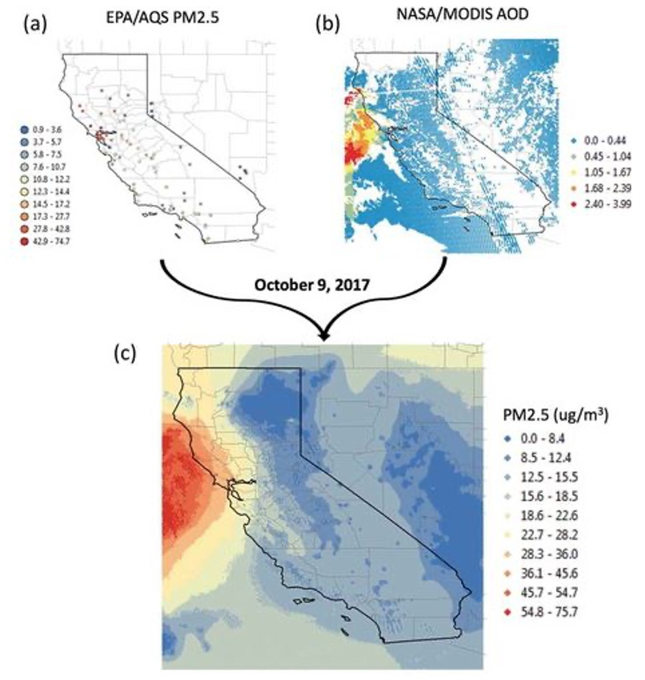
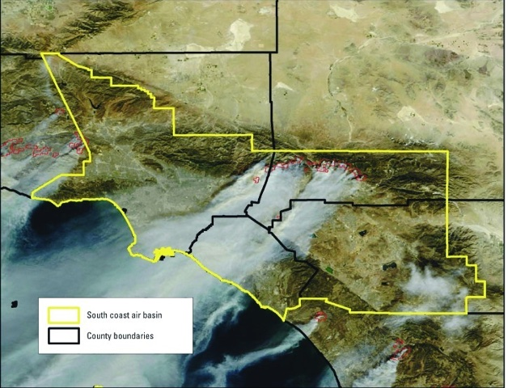
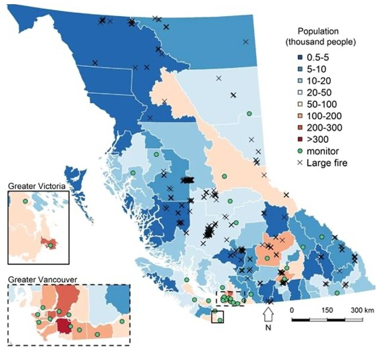

Wildfire Smoke and Health in CA
Exposure Data:
- Aerosol Optical Depth from:
- GOES-16 Advanced Baseline Imaging (ABI)
- Visible Infrared Imaging Radiometer Suite (VIIRS)
- NASA MODIS fire detections and Fire Radiative Power (FRP)
- Monitored PM2.5 from:
- US EPA Air Quality System
- Environmental Beta Attenuation Monitors (EBAM)

Health Data:
- CDC WONDER database
- All-cause mortality
Wildfire Smoke & Children’s Respiratory Health in CA
Exposure Data:
- NASA MODIS satellite imagery:
- CA Air Resources Board:
- Average daily PM2.5 and PM10
- NOAA Hazard Mapping System:
Daily exposure to wildfire PM2.5

Health Data:
- Randy’s Children Hospital Network:
ED and urgent care visits
Respiratory visits with chief complaints: difficulty breathing, respiratory distress, wheezing, asthma, or cough
Wildfire Smoke & Respiratory and Cardiovascular Health in California
Exposure Data:
- NASA MODIS satellite imagery:
- CA Air Resources Board:
- Average daily PM2.5 and PM10
Health Data:
- CA State Office of Statewide Health Planning and Development (OSHPD)
- Hospital admission for respiratory and cardiovascular illness
- US Census
Peat Bog Wildfire Smoke & Cardiopulmonary ED Visits in Rural North Carolina
Exposure Data:
- NOAA Geostationary Operational Environmental Satellites (GOES):
- Satellite measurements of aerosol optical depth (AOD)
- 3-day window of dense smoke plume

Health Data:
- North Carolina Disease Event Tcking and Epidemiologic Collection Tool:
- Syndromic surveillance program
- Daily ED visit counts for:
- Asthma, COPD, pneumonia, acute bronchitis and heart failure
Wildfires & Birth Weight in California
Exposure Data:
- CA Department of Forestry & Fire Protection:
- Fire activity, duration and perimeter
- NASA MODIS satellite imagery:
- Inspection to define window of potential wildfire smoke exposure

Health Data:
- CA Center for Health Statistics, Department of Health Services
- Birth records for infants delivered in the South Coast Air Basin
- Before and after the fire event
Wildfire Smoke & Pharmaceutical Dispensations and Outpatient Visits in BC
Exposure Data:
- BC Ministry of Environment Air Monitoring Network:
- Average daily PM2.5 and PM10
- NASA MODIS satellite imagery:
- Aerosol optical depth and fire radiative power
- NOAA Hazard Mapping System:

Health Data:
- BC PharmaNet database
- Daily counts of pharmaceutical dispensations
- BC Medical Services Plan billings database
- Daily counts of cause-specific outpatient visits